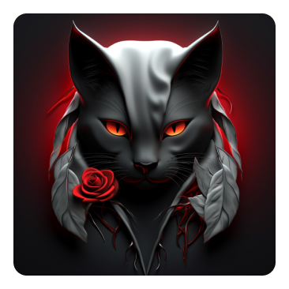

Любители экстремального отдыха решили отправиться в лес на выходные. Все было хорошо до тех пор, пока они не столкнулись с неприятным сюрпризом.
Группа молодых людей заблудилась в лесу и решила разжечь костер, чтобы согреться. Но когда они зажгли огонь, из темноты вышла странная старушка и начала бормотать нечленораздельные слова. Молодые люди испугались и решили быстро покинуть лес, но старушка начала бежать за ними, превращаясь в черную кошку и обратно. Это было гротескно и пугающе одновременно.
Один из участников команды решился остановиться и выяснить, что происходит. Оказалось, что старушка была ведьмой, и она была очень недовольна тем, что молодые люди зажгли костер в лесу. Она предупредила, что они поплатятся за это дорого и исчезла в темноте.
Все участники тура были в ужасе от увиденного и догадались, что им придется бороться с неприятными последствиями своих поступков. Они быстро собрали вещи и покинули лес, решив больше не возвращаться туда в обозримом будущем.